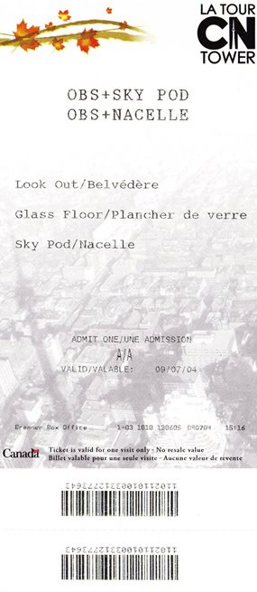
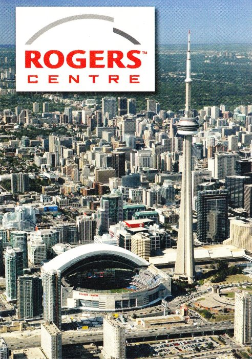
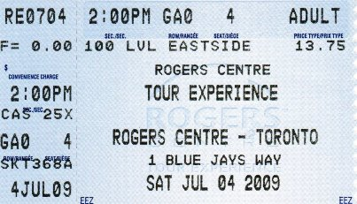
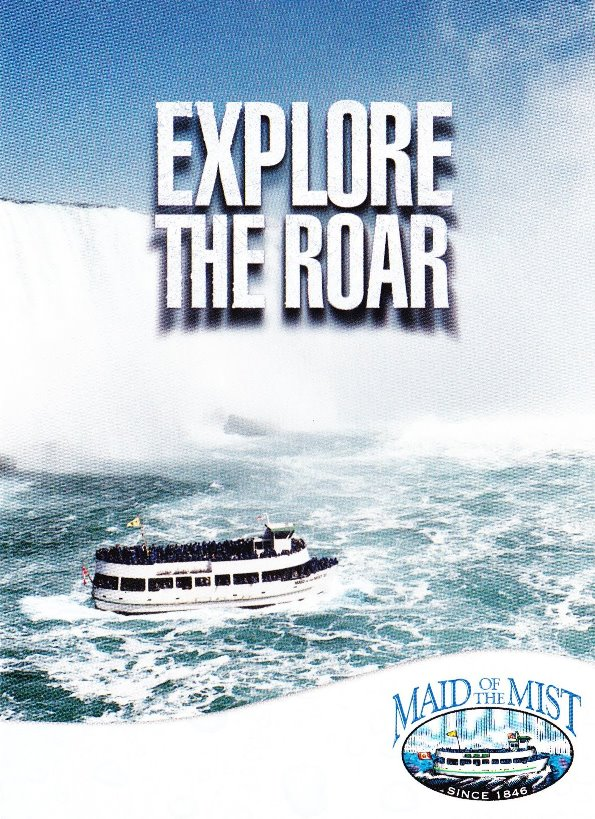

The CN Tower
You know you are in Toronto when you see the needle topped structure that is the CN Tower. A trip to the top to experience the spectacular views of the
city is essential. A glass elevator takes you to the summit in an impressive 58 seconds. From here the brave can venture across the glass floor, with a
vertigo inducing view straight down to the ground, or you can go even higher to the Sky Pod, or eat at the world’s highest revolving restaurant. Be
aware that you may need to queue for a while, particularly in peak months like June and July.

Rogers Centre
Situated just outside CN Tower, this versatile stadium is home to the Major League Baseball team the Toronto Blue Jays, but what is most impressive is how it
can be configured for other sports and events with its movable stands, artificial turf and retractable roof. The tour of the centre is extremely well delivered
and interesting, you even get to stand on the pitch if the schedule permits.


Niagara Falls
Toronto is an excellent base for excursions further afield. Within a two hour drive from the city you reach the natural beauty that is Niagara Falls. A trip
behind the falls is highly recommended. An elevator takes you down through the bedrock to tunnels that lead to observation decks that provide remarkable views
of the waterfall. The thunderous cacophony as you walk through the tunnels is awe inspiring. The Maid of the Mist is another excellent way of experiencing the
falls. The Maid of the Mist boat takes you past the American Falls, and then onto the famous horseshoe Canadian side. It is here that you begin to feel the
inexorable force of the water, I’ve never been in a storm at sea, but I imagine this is what it feels like. The trip lasts approximately 30 minutes, and even
with the hooded raincoat, you will get wet!
Many planned excursions also include a trip to Niagara-on-the-Lake, this picturesque lakeside village with its collection of shops, restaurants, galleries
and buildings is well worth a visit.
